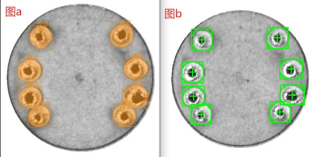
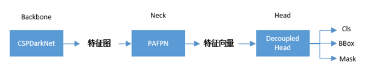
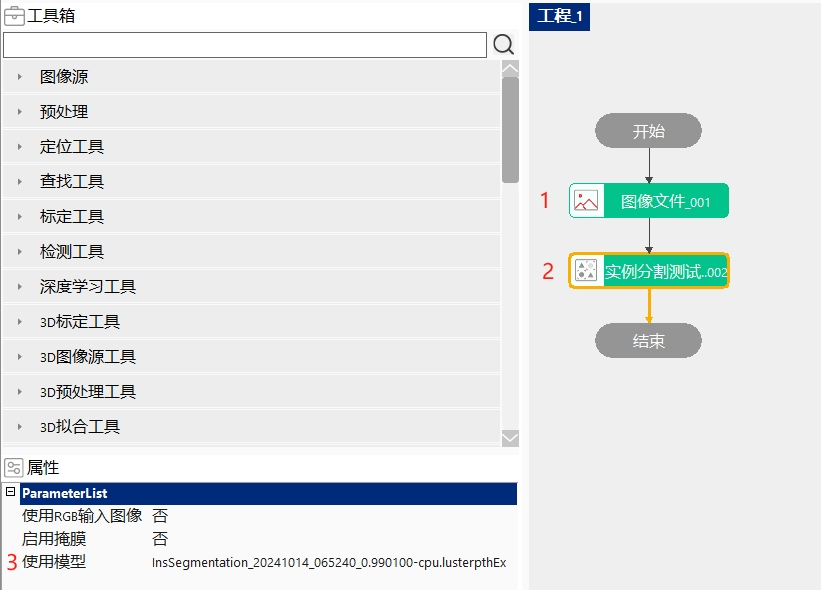
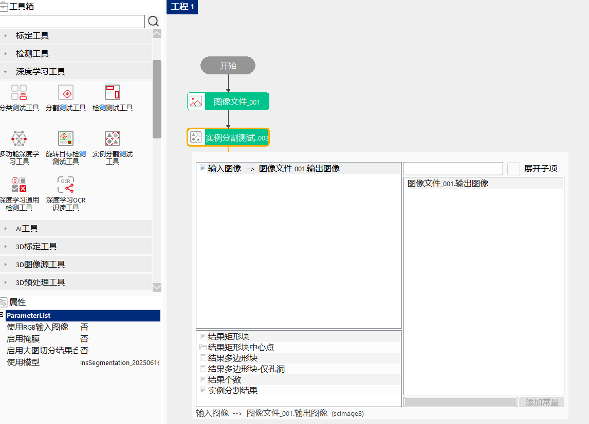
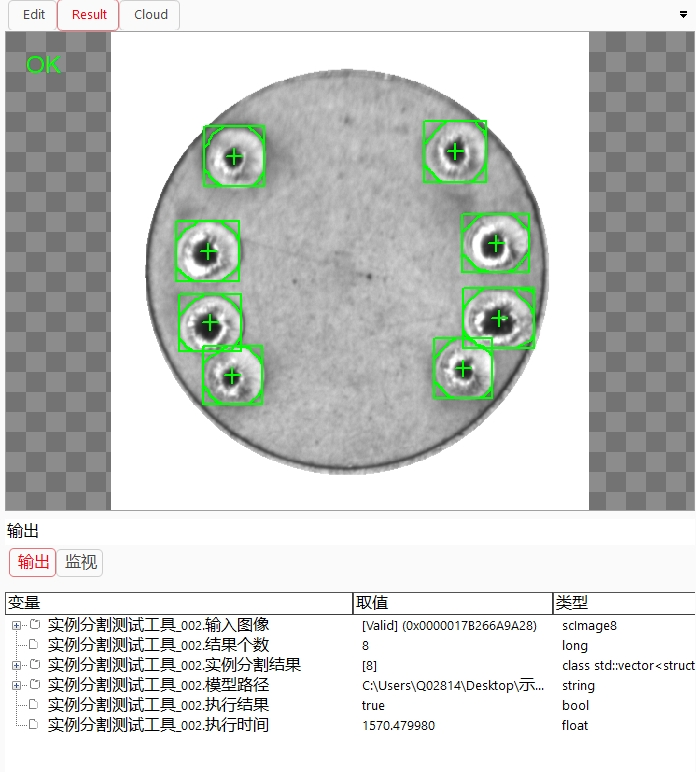
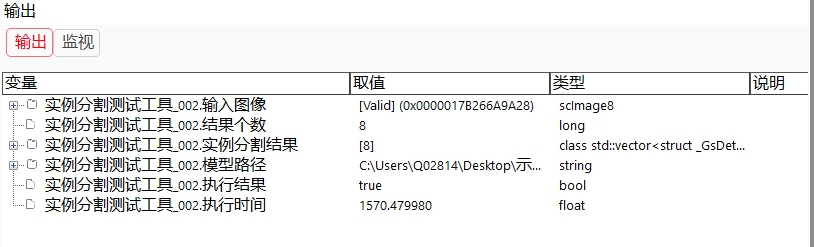

Công cụ kiểm tra phân đoạn instance chủ yếu được dùng để phát hiện cấp vùng trên ảnh, nhận dạng chính xác đối tượng mục tiêu và khuyết tật, đồng thời định vị và phân loại vị trí khuyết tật cùng thông tin loại tương ứng trong ảnh cần kiểm tra, và thực hiện phân đoạn cấp instance cho từng đối tượng. Đầu vào của công cụ này là một ảnh đơn và mô hình mạng đã được huấn luyện, đầu ra là hình chữ nhật bao ngoài mục tiêu và kết quả vùng phân đoạn của mục tiêu. Hiện tại chỉ sau khi cài đặt gói mở rộng AIVI_FB mới có thể sử dụng công cụ này.
Điểm hàn trong hình a là mục tiêu cần phân đoạn, khung đỏ trong hình b là mục tiêu đã được phân đoạn.

Bài toán định vị ký tự, phát hiện thiếu vít, nhiều chi tiết, v.v.
Huấn luyện mô hình:Thông qua huấn luyện để học quan hệ ánh xạ từ đặc trưng ảnh đầu vào đến vùng mục tiêu đầu ra, quan hệ ánh xạ này được xây dựng bằng mạng nơ-ron tích chập. Như trong Hình 2, mạng phân đoạn instance thường trước tiên sử dụng mạng backbone phân loại để trích xuất đặc trưng ảnh và thu được feature map, từ feature map dự đoán ra các khung chữ nhật kết quả, sau đó dựa trên ngưỡng độ tin cậy để thực hiện ức chế cực đại không chồng lấn（non-maximum suppression，viết tắt là NMS）đối với vùng chồng lấn, rồi cắt các khung chữ nhật kết quả sau khi lọc và vùng mask kết quả dự đoán để thu được kết quả cuối cùng. Phần mạng trích xuất đặc trưng có nhiều tham số, các tham số này sẽ được học trong quá trình huấn luyện.

Trong quá trình huấn luyện mạng, một hàm mất mát sẽ được thêm vào phía sau cấu trúc mạng nêu trên, sau đó sử dụng phương pháp giảm gradient ngẫu nhiên để tối thiểu hóa giá trị của hàm mất mát này. Trong quá trình tối ưu bằng giảm gradient ngẫu nhiên, sẽ thực hiện tính toán gradient và cập nhật tham số, nguyên lý cơ bản như sau: $$ w{t+1}=w_t-a\frac{1}{n}\sum{x\in B}\nabla l(x,w_t) $$ Trong đó, n là kích thước batch(batchsize), a là learning rate, $\nabla l(x,w_t)$ biểu thị gradient của hàm mất mát, $w_t$ biểu thị tham số trọng số tại thời điểm trước đó, $w_{t+1}$ biểu thị tham số trọng số sau khi cập nhật, B biểu thị một batch dữ liệu.
Kiểm tra phân đoạn instance:Ở giai đoạn kiểm tra thời gian thực, ảnh thời gian thực được đưa vào mạng, mạng sẽ xuất ra vùng vị trí, loại của từng khung phát hiện mục tiêu và mask tương ứng trong ảnh đó.

Nhấp đúp vào “Công cụ kiểm tra phân đoạn instance”, trong hộp thoại liên kết dữ liệu bật lên, chọn ảnh đầu vào.



| Mô tả hiện tượng | Phương pháp xử lý |
|---|---|
| Công cụ chạy thất bại, báo “Lỗi lấy ảnh” | Kiểm tra ảnh đầu vào đã được thiết lập hay chưa, nhấp đúp vào công cụ là có thể thiết lập ảnh đầu vào |
| Công cụ chạy thất bại, báo “Lỗi gọi thuật toán deep learning” | 1. Kiểm tra mô hình trong trình quản lý mô hình có khởi tạo thành công hay không; 2. Kiểm tra kênh, chiều rộng và chiều cao của ảnh đầu vào có giống với mô hình hay không |
| Tên tham số | Mô tả tham số |
|---|---|
| Sử dụng ảnh đầu vào RGB | “Có”: trong liên kết dữ liệu hiển thị tham số ảnh đầu vào RGB; “Không”: trong liên kết dữ liệu hiển thị tham số ảnh đầu vào |
| Bật mask | “Có”: trong liên kết dữ liệu hiển thị tham số ảnh mask đầu vào; “Không”: trong liên kết dữ liệu không hiển thị tham số ảnh mask đầu vào |
| Bật hợp nhất kết quả cắt ảnh lớn | “Có” thực hiện hợp nhất kết quả tại các vùng cắt ảnh dày đặc; |
| Sử dụng mô hình | Tên mô hình phân đoạn instance cần sử dụng |
| Tên tham số | Mô tả tham số |
|---|---|
| Ảnh đầu vào | Ảnh kiểm tra đầu vào |
| Số lượng kết quả | Số lượng mục tiêu được phân đoạn |
| Kết quả phân đoạn instance | Tập hợp kết quả phân đoạn instance |
| Loại kết quả | Chỉ số của loại |
| Tên loại | Tên của loại |
| Hình chữ nhật kết quả | Tọa độ điểm góc trên bên trái và kích thước của mục tiêu được phân đoạn |
| Độ tin cậy kết quả | Độ tin cậy của kết quả nhận dạng |
| Diện tích kết quả | Diện tích của mục tiêu được phân đoạn |
| Đường dẫn mô hình | Đường dẫn mô hình sử dụng khi phân đoạn |
| Kết quả thực thi | Công cụ thực thi có thành công hay không |
| Thời gian thực thi | Thời gian tiêu tốn khi công cụ thực thi |
| Tên tham số | Mô tả tham số |
|---|---|
| Ảnh đầu vào | Hiển thị ảnh kiểm tra đầu vào |
| Khối hình chữ nhật kết quả | Hiển thị hình chữ nhật kết quả |
| Điểm tâm khối hình chữ nhật kết quả | Hiển thị điểm tâm của hình chữ nhật kết quả |
| Khối đa giác kết quả | Hiển thị đa giác kết quả |
| Khối đa giác kết quả - chỉ lỗ rỗng | Hiển thị đa giác lỗ rỗng kết quả |
| Kết quả thực thi | Hiển thị kết quả thực thi của công cụ |
Tham khảo “\Samples\实例分割测试工具.gvp”.